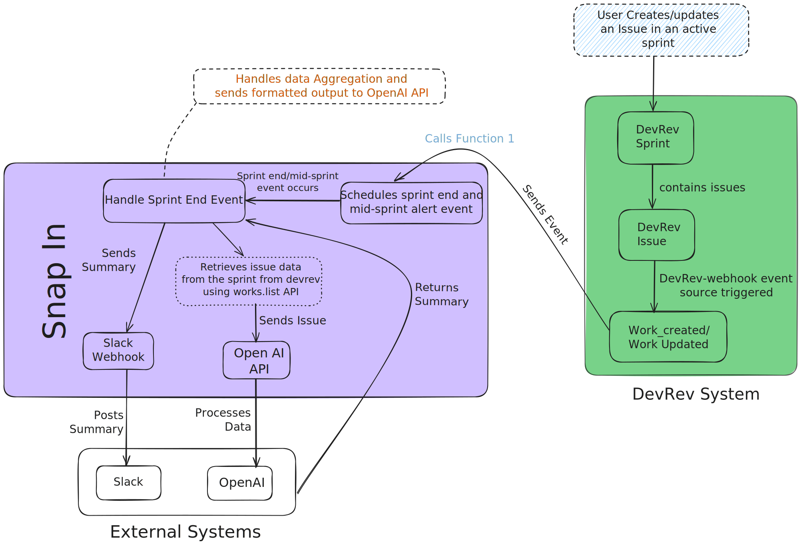

Prerequisites
- Obtain a Slack webhook URL to specify where sprint summaries should be posted.
- Access DevRev API to monitor and gather sprint data. Ensure you have necessary roles and permissions.
- A valid API key for OpenAI for creating the summarized content.
Setup Instructions
Clone the repository:
git clone https://github.com/Amulya-gr/Sprint-Summariser
Install Dependencies:
Ensure you have Node.js installed, then run:npm install
- Go to config.json file located at code/src/config.json and put your openai api key.
- Deploy the snap-in. Please refer devrev docs.
Workflow
-
User Action in DevRev System: A user creates or updates an issue in an active sprint, triggering a
work_createdorwork_updatedevent via the DevRev-webhook event source. - Event Sent to Snap-in: The triggered event is sent to the Snap-in for processing.
-
Snap-in Event Handling:
- Schedules two key events: Mid-Sprint Alert and Sprint End Event.
- Begins data aggregation when the events are triggered.
-
Retrieving Sprint Data: The Snap-in fetches sprint details, issue statuses, and velocity metrics using DevRev's
works.list API. -
Data Processing with OpenAI API: The Snap-in sends the sprint data to the OpenAI API, which:
- Analyzes the data.
- Generates a formatted summary with insights (e.g., progress, areas for improvement).
-
Summary Delivery: The generated summary is sent via:
- Slack Webhook: Posts the summary to a Slack channel.
- Optional Further Processing: Enhanced insights from OpenAI.
- External Systems Integration: The Snap-in ensures seamless collaboration using Slack and OpenAI for AI-enhanced sprint management.
Automation Handling
- Management Function (Function 1): Continually update tracking details aligning with events from the `devrev-webhook`.
- Summary Function (Function 2): Transforms and delivers a structured overview once a sprint cycles out.